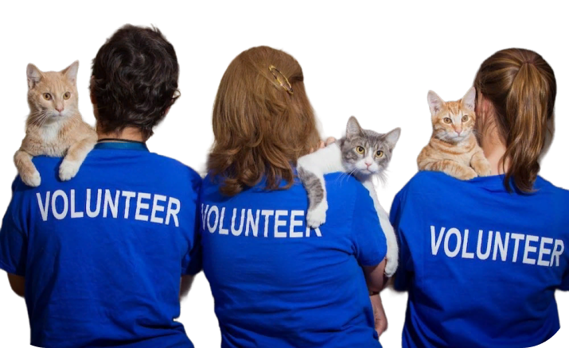

Стать волонтером


Животные в приютах нуждаются не только в корме и уходе, но и в вашей любви и внимании. Стать волонтером в приюте — значит приносить свет и радость в жизнь бездомных животных, быть их опорой и надеждой на лучшее будущее.
Почему стоит стать волонтером:
- Помощь нуждающимся: Ваше время и внимание сделают жизнь бездомных животных ярче и комфортнее.
- Любовь без границ: Вы сможете подарить животным нежность и заботу, которые им так необходимы.
- Личный рост: Волонтерство в приюте наполняет вашу жизнь смыслом, дарит радость от благотворного дела и помогает раскрывать вашу доброту.
Как стать волонтером:
- Обратитесь в приют: Свяжитесь с приютом, узнайте условия и возможности волонтерства.
- Пройдите обучение: Получите инструктаж и обучение, чтобы быть готовым к работе с животными.
- Начните доброе дело: Помогайте животным, дарите любовь и радость, делайте их жизнь счастливее.
Стать волонтером для приюта — значит стать частью большой дружной семьи, где каждый животное знает, что его любят и заботятся о нем. Присоединяйтесь к нам и помогайте животным почувствовать тепло человеческого сердца!